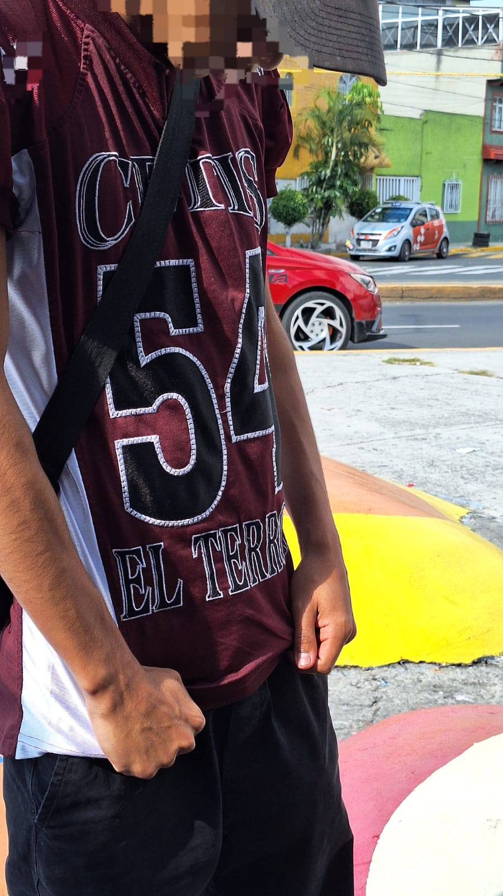

Datos que no sabias del CETIS 054
Si bien sabemos, el cetis es una de las mejores escuelas preparatorias de la CDMX. Lo que la escuela es muy cierto las instalaciones, talleres, educacion, profesores, buena opcion, carreras tecnicas etc. pero el otro lado del cetis y el cual se ve diario, es muy diferente en diferentes aspectos a lo que dice la propia escuela.
¿Que es eso?
- Hay eventos porriles que luego dañan a los horarios de las clases porque luego las cancelan.
- Hay rivalidades con otras escuelas
- Las rivalidades causan encuentros violentos entre los porros de nuestro plantel con los de otro plantel; ocasionando daños a personas, y cosas materiales como coches, puestos etc.
- Casi toda la escuela tiene grupitos de 3 a 6 personas, un %70 son grupos de alumnos buenos, sin conflictos bien educados etc.
- El otro %30 esta conformado por alumnos agresivos, pelioneros; mismos que hacen que otros alumnos del otro porcentaje se junten. Eso causa conflictos, discusiones y hasta peleas etre diferentes grupos de otros grados o turnos.
- Aunque las personas porriles de nuestro plantel se vean malos; mayormente no es asi. Cuidan o moderan los conflictos que haya etre alumnos dentro del plamtel. Al igual, tambien esos problemas muchas veces esta al cuidado de personas mayores. Aclaro: No digo que esos problemas los frenen.
| Resguardar la calma y tranqulizarce |
|---|
| No azomarce por la ventana. |
| Alejarce de vidrios. |
| Ingresar a lugares que no esten en lugares al aire libre |
| No salir del plantel con o sin motivo alguno. |
| Avisar a las autoridades sobre dicho problema. |
| No participar en eventos de badalismo de los mismos. |